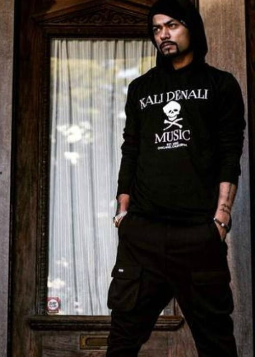

Known world-wide as the creator of Punjabi rap, Bohemia is a rapper and a music producer from California. He started his career as a near-novelty, a Desi teenager from California, delivering, hardcore rap music, a style of music which was unheard of at the time. But within a few years he has pretty much reinventing the Desi pop music scene and influenced not only youth to start rhyming Punjabi lyrics to hip-hop beats, but the Bollywood superstars as well. Bohemia quickly gained popularity with his independent debut album, ‘Vich Pardesan De’ [In the foreign land] hitting Top 10 on BBC Radio UK. The following album, ‘Pesa nasha pyar’ [Money, intoxication, love] became the first full-length Punjabi rap album released by a major label in history. It brought Bohemia increased popularity, including his recent multi-record deal with music mogul Universal Music [2006 – 2009]. This brought his creation of ”Punjabi rap” to mainstream recognition, making Bohemia pioneer of a new genre of music known as ‘Desi-Hip-Hop’ or ‘Desi-rap’. In 2006 ‘Pesa nasha pyar’ hits #2 on Maxim magazine’s Top 10 downloads, and #3 on Planet M chart India. Bohemia appears in XXL magazine New York. He enters Bollywood with the title track for Warner Bros. film ‘Chandni Chowk to China’, appearing in the film with Akshay Kumar and Deepika Padukone. Bohemia most recently lends his voice for the film ‘Desi Boyz’ to set the scene for Sanjay Dutt‘s cameo. Da rap star, his second studio album receives 4 nominations at the UK Asian music awards and PTC Punjabi music awards, including ‘Best Punjabi Album’ and ‘Best Music Director’. ‘Da rap star’ also remains #1 on Planet M chart several weeks. Bohemia tours the world in 2009 performing all over America, Europe and Asia. He has appeared on many of Universal India’s mega-compilations. Bohemia is one of the best-selling artists of the year according to UMG India in 2009, making him the flagship artist of Universal Music Group India. Born in Karachi, Pakistan Bohemia moved to the United States during his early teen years. He started learning music at a very young age from his father. He started writing Punjabi poetry around then as well. After moving to San Francisco Bay Area, California, Bohemia was introduced to America that was much the opposite of palm trees and green grass. The town was infested with drugs and violence. About a year later being in the states, he lost his mother to cancer. At that time, Bohemia left home and survived as a local musician. He started working as a keyboard player/music arranger while living at local studios with other musicians. After a few years of success, the local group of musicians fell apart and Bohemia left to pursue music on his own. Bohemia soon started putting his poetry to the music he composed and gave birth to a new genre of music, Desi Hip Hop / Punjabi Rap. In May 2012, Bohemia became the first Rap artist invited to the legendary Coke Studio Pakistan. Bohemia released his 3rd studio album the Thousand Thoughts LP on August 30th 2012. The album received the Best Punjabi album of the year award at the PTC Punjabi Music Awards 2013. In 2015 Bohemia decided to launch his own music label / production house called ‘Kali Denali Music’. KDM has since been active introducing new acts to the music scene. In 2016 Bohemia signed with India’s largest music company, T-Series. In 2017 on February 13th, Bohemia released his fifth studio solo album called ‘Skull & Bones – The Final Chapter’. The album is completely written, recorded and composed by himself. The album sparked rumors and controversy about Bohemia’s alleged connection with Illuminati, mostly due to the CD cover, also designed by Bohemia himself. Despite all this, the album hit the #1 spot on iTunes Charts. The album had a total of 10 tracks. Classics like ‘Bijlee’ narrates a tragic tale of a girl next-door dealing with peer pressure and today’s society. In ‘Zamana Jali’ he raps and shares his views on the world, media and politics of today. With ‘Cadillac’ and ‘Meri Jeet’ he gets back to his classic yet fresh west-coat style beats and spitfire flow. With ‘Gol Gol’, ‘Nazere Mili’, ‘Titli’ and ‘Lak Da Hulara’ we get some fusion of hip-hop and melodic R&B style. And finaly ‘Photo’ in which he updates his fans about his journey thus far. Bohemia recently tweeted from Las Vegas celebrating the end of ‘Skull and Bones’ Tour. The tour started in Canada and covered New Zealand, Australia and parts of Middle-East ending in Dubai. There are also rumors in the media about him working a Bio-pic feature film. For more resent updates subscribe to Bohemia’s YouTube channel now.